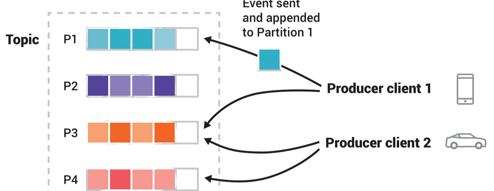

Kafka Usage
Kafka 是分布式消息队列的事实标准，广泛应用于日志收集、流处理、事件驱动等场景。本文从核心概念入手，逐步深入到 Java 客户端编程和 Spring Boot 集成，覆盖开发中最常用的场景。
核心概念
-
整体架构

组件 说明 Broker Kafka 服务节点，集群由多个 Broker 组成 Topic 消息的分类，Producer 向 Topic 写消息，Consumer 从 Topic 读消息 Partition Topic 的物理分片，一个 Topic 可包含多个 Partition，实现分布式 Producer 消息生产者，负责将消息发送到指定 Topic Consumer 消息消费者，从 Topic 拉取消息 ConsumerGroup 消费者组，组内多个 Consumer 共同消费 Topic，每个 Partition 只被组内一个 Consumer 消费 Offset 消息在 Partition 中的唯一偏移量，递增且唯一 Replica 分区副本，Leader 负责读写，Follower 同步备份 一个 Topic 的 Partition 数决定了消费端的 最大并行度 ——同一个 ConsumerGroup 内
Consumer 数量超过 Partition 数是多余的。
-
消息模型
- 点对点 ：一条消息只被一个 Consumer 消费，通过 ConsumerGroup 实现
- 发布订阅 ：一条消息被多个 ConsumerGroup 消费，不同 Group 间独立消费
-
消费语义
语义 实现方式 说明 至少一次 先消费消息，再提交 offset 消息不丢失，但可能重复消费 最多一次 先提交 offset，再消费消息 不重复，但可能丢失消息 精确一次 事务 + 幂等生产者 Kafka 0.11+ 支持，性能有损耗
Spring Boot 集成
-
依赖
<dependency> <groupId>org.springframework.kafka</groupId> <artifactId>spring-kafka</artifactId> </dependency>Spring Boot 自带版本管理，无需指定版本号。
-
yaml 配置
spring: kafka: bootstrap-servers: localhost:9092 producer: key-serializer: org.apache.kafka.common.serialization.StringSerializer value-serializer: org.apache.kafka.common.serialization.StringSerializer acks: all retries: 3 batch-size: 16384 linger-ms: 1 compression-type: lz4 consumer: key-deserializer: org.apache.kafka.common.serialization.StringDeserializer value-deserializer: org.apache.kafka.common.serialization.StringDeserializer group-id: my-group enable-auto-commit: false auto-offset-reset: earliest max-poll-records: 500 listener: ack-mode: MANUAL_IMMEDIATE # 调用 ack.acknowledge() 后，立即提交 concurrency: 3 # 并发消费者数，建议 <= Partition 数-
acks: all
含义：生产者需要等待所有处于同步状态的副本（ISR） 都成功写入消息，才认为发送成功。这是 Kafka 提供的最高级别数据可靠性保证。
作用阶段：发送后的确认（Acknowledgment） 阶段。
建议：对于订单、支付等核心数据，必须设置为 all 或 -1，确保消息不丢失。 -
retries: 3
含义：消息发送失败时，生产者最多重试 3 次。如果 3 次后仍失败，则抛出异常。
作用阶段：发送失败后的重试（Retry） 阶段。
建议：配合 acks=all 使用，可以应对 Broker 临时 Leader 选举等瞬时故障。通常设置为一个大于 0 的值。 -
batch-size: 16384
含义：当多条消息发往同一个分区时，生产者会将它们攒成一个批次（Batch）再发送。这个参数指定了每个批次的最大字节数，默认 16KB。
作用阶段：发送前的攒批（Batching） 阶段。
建议：适当增大（如 32KB 或 64KB）可以提升吞吐量，但也会增加延迟。 -
linger-ms: 1
含义：生产者攒批时，最多等待 1 毫秒。如果在这段时间内批次大小达到了 batch-size，就立即发送；否则，时间一到，即使批次未满也会发送。
作用阶段：发送前的攒批等待（Lingering） 阶段。
建议：默认值为 0（立即发送）。设置为 1-10ms，可以在低延迟下有效提高批次利用率，从而提升吞吐量。 -
compression-type: lz4
含义：指定生产者在发送前，使用 LZ4 算法对消息进行压缩。
作用阶段：发送前的压缩（Compression） 阶段。
建议：LZ4 在压缩比和速度上平衡得很好。此外还有 gzip（压缩比高，但耗 CPU）和 snappy（速度快，压缩比尚可）。启用压缩可以显著节省网络带宽和磁盘存储。
-
-
Producer
import org.springframework.kafka.core.KafkaTemplate; import org.springframework.kafka.support.SendResult; import org.springframework.stereotype.Component; import java.util.concurrent.CompletableFuture; @Component public class MessageProducer { private final KafkaTemplate<String, String> kafkaTemplate; public MessageProducer(KafkaTemplate<String, String> kafkaTemplate) { this.kafkaTemplate = kafkaTemplate; } public void send(String topic, String key, String message) { CompletableFuture<SendResult<String, String>> future = kafkaTemplate.send(topic, key, message); future.whenComplete((result, ex) -> { if (ex == null) { System.out.printf("发送成功: topic=%s, offset=%d%n", result.getRecordMetadata().topic(), result.getRecordMetadata().offset()); } else { System.err.println("发送失败: " + ex.getMessage()); } }); } } -
Consumer
import org.apache.kafka.clients.consumer.ConsumerRecord; import org.springframework.kafka.annotation.KafkaListener; import org.springframework.kafka.support.Acknowledgment; import org.springframework.stereotype.Component; @Component public class MessageConsumer { @KafkaListener(topics = "test", groupId = "my-group") public void listen(ConsumerRecord<String, String> record, Acknowledgment ack) { try { System.out.printf("收到消息: offset=%d, key=%s, value=%s%n", record.offset(), record.key(), record.value()); // 业务处理 ack.acknowledge(); // 手动提交 offset } catch (Exception e) { System.err.println("消费失败: " + e.getMessage()); // 不提交 offset，消息会被重新消费 } } }提交时机带来的影响
提交时机 消费语义 风险 先提交 Offset，后处理消息 至多一次（At-Most-Once） 如果提交后、处理前消费者崩溃，这条消息就永久丢失了，不会再被读到。 先处理消息，后提交 Offset 至少一次（At-Least-Once） 如果处理完、提交前消费者崩溃，重启后会从旧 Offset 开始读，导致消息重复处理。 ack mode
AckMode 行为 生产环境推荐度 MANUAL 调用 ack.acknowledge() 后，批量提交（攒一批再提交） ⚠️ 不推荐，提交延迟可能导致重复消费 MANUAL_IMMEDIATE 调用 ack.acknowledge() 后，立即提交 ✅ 强烈推荐，精确控制 RECORD 每处理一条消息自动提交 ❌ 不推荐，性能差 BATCH 每批消息处理完自动提交 ⚠️ 不推荐，粒度太粗 TIME 定时自动提交 ❌ 不推荐，可能丢消息 COUNT 计数达到阈值自动提交 ❌ 不推荐，可能丢消息 -
批量消费
@Component public class BatchConsumer { @KafkaListener(topics = "test", groupId = "batch-group") public void batchListen(List<ConsumerRecord<String, String>> records, Acknowledgment ack) { for (ConsumerRecord<String, String> record : records) { // 逐条处理 } ack.acknowledge(); } } spring: kafka: listener: type: batch # 开启批量消费 ack-mode: manual consumer: max-poll-records: 100
顺序消息
Kafka 保证 同一个 Partition 内的消息有序 。要实现全局有序，只需把 Topic 设置为 *单 Partition*。
实现局部有序（按业务 key）：
@Component
public class OrderlyProducer {
private final KafkaTemplate<String, String> kafkaTemplate;
public OrderlyProducer(KafkaTemplate<String, String> kafkaTemplate) {
this.kafkaTemplate = kafkaTemplate;
}
public void sendOrderly(String topic, String businessKey, String message) {
// 相同 businessKey 的消息进入同一个 Partition
kafkaTemplate.send(topic, businessKey, message);
}
}
Kafka 默认按 key 的 hash 取模选择 Partition，相同 key 必然路由到同一 Partition，天然支持 key 级别有序。
全局顺序消息受单分区影响，有性能问题。可根据业务特性对消息做分区。
比如增加/扣减库存，可以根据货品编号分区，只要保证同一个货品消息是有序的，该货品库存增加/扣减就不会出现问题。
事务消息
-
事务消息
Kafka 0.11 起支持事务，实现跨 Partition 的原子写入。
spring: kafka: producer: transaction-id-prefix: tx- # 开启事务的前提配置 transaction-id-prefix 后，Spring Boot 会自动注册名为 kafkaTransactionManager 的 Bean。
若项目同时存在数据库事务管理器， @Transactional 必须显式指定 transactionManager ，否则会误用默认的 DataSourceTransactionManager 。import org.springframework.context.annotation.Bean; import org.springframework.context.annotation.Configuration; import org.springframework.kafka.core.KafkaTemplate; import org.springframework.kafka.core.ProducerFactory; import org.springframework.kafka.transaction.KafkaTransactionManager; @Configuration public class KafkaTransactionConfig { // 未使用 Spring Boot 自动配置时，需手动声明 @Bean public KafkaTransactionManager<String, String> kafkaTransactionManager( ProducerFactory<String, String> producerFactory) { return new KafkaTransactionManager<>(producerFactory); } @Bean public KafkaTemplate<String, String> kafkaTemplate( ProducerFactory<String, String> producerFactory) { return new KafkaTemplate<>(producerFactory); } } import org.springframework.kafka.core.KafkaTemplate; import org.springframework.stereotype.Component; import org.springframework.transaction.annotation.Transactional; @Component public class TransactionalProducer { private final KafkaTemplate<String, String> kafkaTemplate; public TransactionalProducer(KafkaTemplate<String, String> kafkaTemplate) { this.kafkaTemplate = kafkaTemplate; } @Transactional(transactionManager = "kafkaTransactionManager") public void sendInTransaction() { kafkaTemplate.send("topic-a", "key1", "message1"); kafkaTemplate.send("topic-b", "key2", "message2"); // 两条消息要么都成功，要么都失败 } } -
发件箱模式
Kafka 事务解决的是向 topic-a 和 topic-b 两个主题投递消息的事务性。
当业务要求Kafka消息发送与数据库更新必须保持完全一致时，标准的Kafka事务管理器无法胜任，因为数据库和Kafka是两种不同的资源，无法共享一个本地事务
事务性发件箱模式（Transactional Outbox Pattern）是解决这个问题的经典方案。
其核心思想是，将“发送Kafka消息”这个动作，转换为一次数据库写入操作。
原子保存：在同一个数据库事务中，同时保存业务数据和一条待发送的“发件箱事件”记录。
异步发布：一个独立的后台任务（OutboxPublisher）异步地轮询outbox_event表，将状态为PENDING的事件发布到Kafka，发布成功后更新事件状态为SENT。 -
VS RocketMQ
RocketMQ 事务消息解决的是 本地事务与消息发送的一致性 ——先写库再发消息，或先发半消息再写库，保证两者最终一致。这与 Kafka 事务（多条消息原子投递）解决的问题不同。
对比项 Kafka 事务 RocketMQ 事务消息 核心目标 多条消息跨 Partition 原子写入 本地事务与消息发送的一致性 事务模型 生产者端事务（begin/commit） 半事务消息 + 本地事务回调 典型场景 同时向多个 Topic 投递且要求原子性 订单落库 + 发通知消息 DB + MQ 一致 需发件箱模式等额外方案 原生支持（半消息 + check 回查） 消费可见性 read_committed 隔离级别 半消息提交前对消费者不可见 -
半事务消息流程
Producer 发送的是 半事务消息（Prepared Message） ，Broker 先落盘但不投递给消费者，等 Producer 确认本地事务结果后再决定提交或回滚。
Producer Broker Consumer | 半事务消息(prepare) | | |--------------------->| 存储，标记不可消费 | |<---------------------| 发送成功 | | 执行本地事务 | | | commit / rollback | | |--------------------->| 提交→可消费 / 回滚→丢弃 | | |------------------------->| 仅 commit 后可见 -
半事务消息的超时回查
当 executeLocalTransaction 返回 UNKNOWN ，或 Producer 在超时时间内未返回 commit/rollback 时，Broker 会定期回调 Producer 的 checkLocalTransaction ，根据业务侧记录的本地事务状态做最终决议。
- Broker 默认每隔 60s 发起一次回查，可通过 transactionCheckInterval 调整
- 半消息在 Broker 端的存活时间由 transactionTimeout 控制（默认 6 小时），超时未决议的消息会被丢弃
- 业务侧应在本地事务表中记录事务状态（如 COMMIT / ROLLBACK / PROCESSING ），供回查时查询
回查接口必须幂等。Broker 会多次调用 checkLocalTransaction ，直到得到明确的 COMMIT 或 ROLLBACK。
-
Spring Boot 集成示例
import org.apache.rocketmq.spring.annotation.RocketMQTransactionListener; import org.apache.rocketmq.spring.core.RocketMQLocalTransactionListener; import org.apache.rocketmq.spring.core.RocketMQLocalTransactionState; import org.springframework.messaging.Message; import org.springframework.stereotype.Service; @Service @RocketMQTransactionListener(rocketMQTemplateBeanName = "rocketMQTemplate") public class OrderTransactionListener implements RocketMQLocalTransactionListener { private final OrderService orderService; public OrderTransactionListener(OrderService orderService) { this.orderService = orderService; } // 半消息发送成功后，执行本地事务 @Override public RocketMQLocalTransactionState executeLocalTransaction(Message msg, Object arg) { try { Order order = (Order) arg; orderService.createOrder(order); // 本地事务：写库 return RocketMQLocalTransactionState.COMMIT; } catch (Exception e) { return RocketMQLocalTransactionState.ROLLBACK; } } // 超时回查：Broker 未收到明确结果时调用 @Override public RocketMQLocalTransactionState checkLocalTransaction(Message msg) { String orderId = msg.getHeaders().get("orderId", String.class); if (orderService.isOrderCreated(orderId)) { return RocketMQLocalTransactionState.COMMIT; } return RocketMQLocalTransactionState.ROLLBACK; } }
-